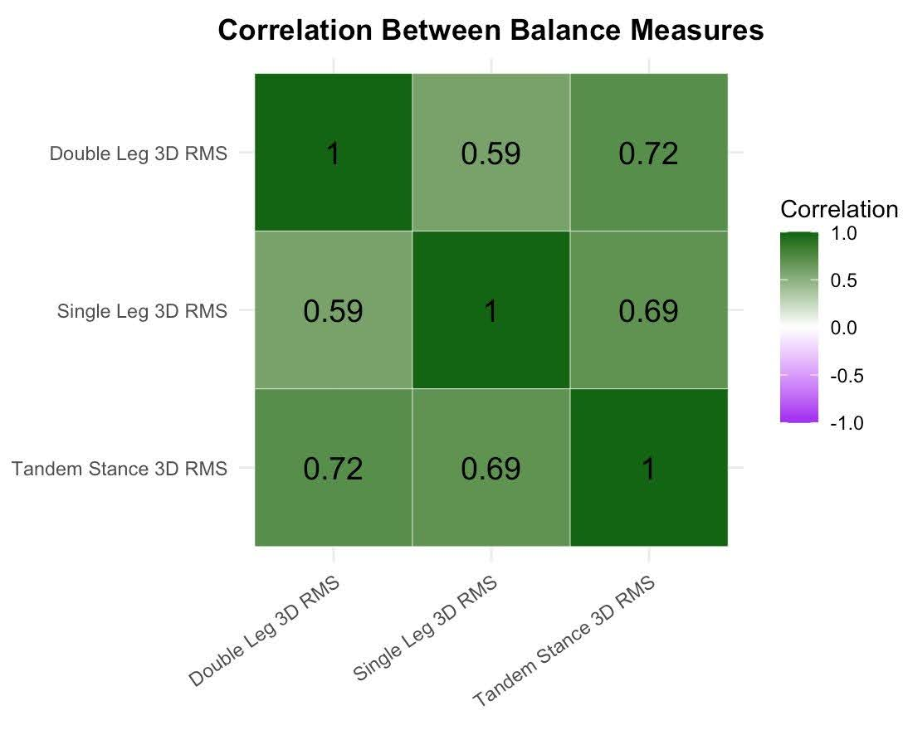
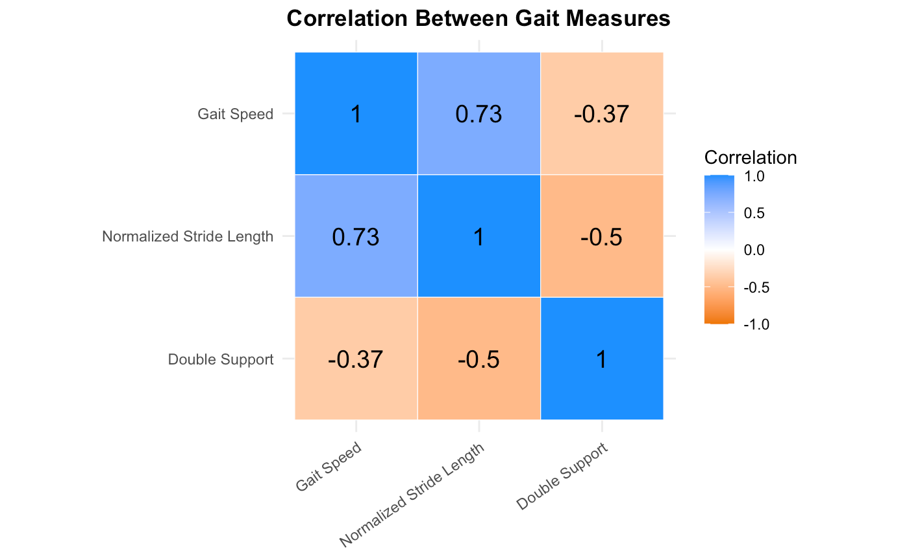
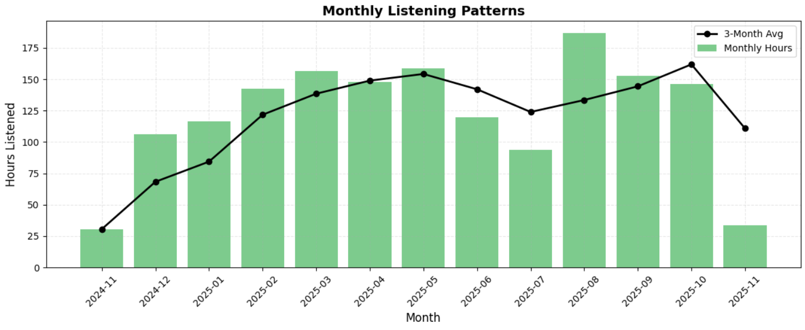
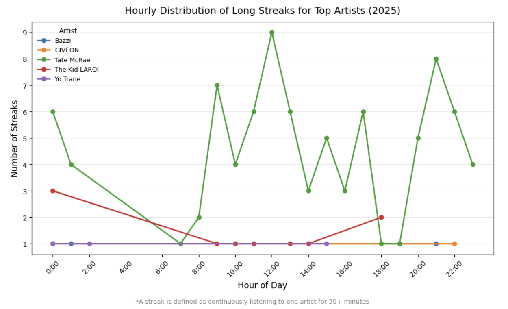

Statistical Consulting:
Sports Analytics vs. Psychology
Using R to find patterns in Psychosocial Factors and Softball Performance Metrics
Research Question: “Do psychosocial factors have an association with gait, balance, and softball performance metrics for softball players ages 7-15 in the California Central Coast?”
The goal of this study was to allow for more equal investment in research regarding softball, compared to the attention and investment received by baseball. Specifically, the client was interested in correlations or results when conducting analysis on how psychosocial factors affected metrics in balance, gait, and softball performance.
Variables
The analysis uses three kinds of measures: gait metrics, balance metrics, and psychosocial survey scores.
Gait Metrics
- Gait Speed
- Speed at which the participant walked, measured in m/s.
- Stride Length
- Length of the strides participants walked with, measured in m.
- Double Support
- Percentage of the gait cycle during which participants are on two feet.
Balance Metrics
- Double Leg (DL) Stance
- Average 3D RMS acceleration score for two trials when standing in the double leg stance (standing with 2 feet).
- Single Leg (SL) Stance
- Average 3D RMS acceleration score for two trials when standing in the single leg stance (standing on 1 foot).
- Tandem Stance (TS)
- Average 3D RMS acceleration score for two trials when standing in the tandem stance (standing with one foot in front of the other).
Psychosocial Factors
- Confidence and Perception
- Average Likert score of questions 1–3 on the survey.
- Perceived Opportunity and Inclusion
- Average Likert score of questions 4–6 on the survey.
- Motivation and Enjoyment/Perceived Benefit
- Average Likert score of questions 7–9 on the survey.
- External Social Environment
- Average Likert score of questions 10–13 on the survey.
MANOVA
I took the gait metric as a joint response of the 3 individual metrics, gait speed (m/s), normalized stride length (m), and double support (% gait cycle). Similarly I did this for the balance metrics. Then I tested whether or not a psychosocial factor has an effect on the gait/balance metric using a MANOVA.

Correlations Among Balance Metrics.

Correlations Among Gait Metrics.
Multiple Linear Regression
Further it was important to consider the possibility of the individual gait metrics being related with one another, and the individual balance metrics being related with one another. For example, if a higher gait speed is related to a higher normalized stride length it has a positive correlation. If it were vice-versa, we would say they have a negative correlation, and if there were no relation, then we say zero correlation.
Listening rose and fell with the semester
Monthly listening hours, with a 3-month moving average layered on top to smooth out noise.

Hours listened per month, Nov 2024–Nov 2025.
The August spike lines up with the start of school. The low points fall during the summer months, where less studying and academic work is being done. During midterm and finals periods, listening patterns increase again. From a retrospective lens, this type of pattern is obvious, but it is invisible until it is plotted.
When the longest streaks happen
For each top artist, I found their longest continuous same-artist "streaks" (30+ minutes of uninterrupted listening) and plotted how many of those streaks started at each hour of the day.

Number of 30+ minute streaks starting at each hour, by artist.
Tate McRae streaks spike hardest around noon and again in the early evening — a peak of 9 streaks starting at 12pm alone — while most other artists never produce more than a single long streak in any given hour. This shows the difference between an artist they stream in the background vs one they actually sit with.
A result that surprised me
Before running the numbers, I assumed longer listening sessions would mean fewer skips — more time settled in, less impatience. However, the data said otherwise.
I also found that the longest same-artist "streaks" (30+ minutes of continuous listening) cluster around very specific hours of the day depending on the artist — one artist consistently shows up in midday and evening streaks, while others only ever appear in short, scattered bursts.
Takeaways
The most interesting part of this project was that a personal, informal dataset like streaming history holds real structure once it's cleaned, partitioned, joined, and windowed properly. Building the session/streak logic with Spark window functions ended up being more valuable practice than any of the individual findings.